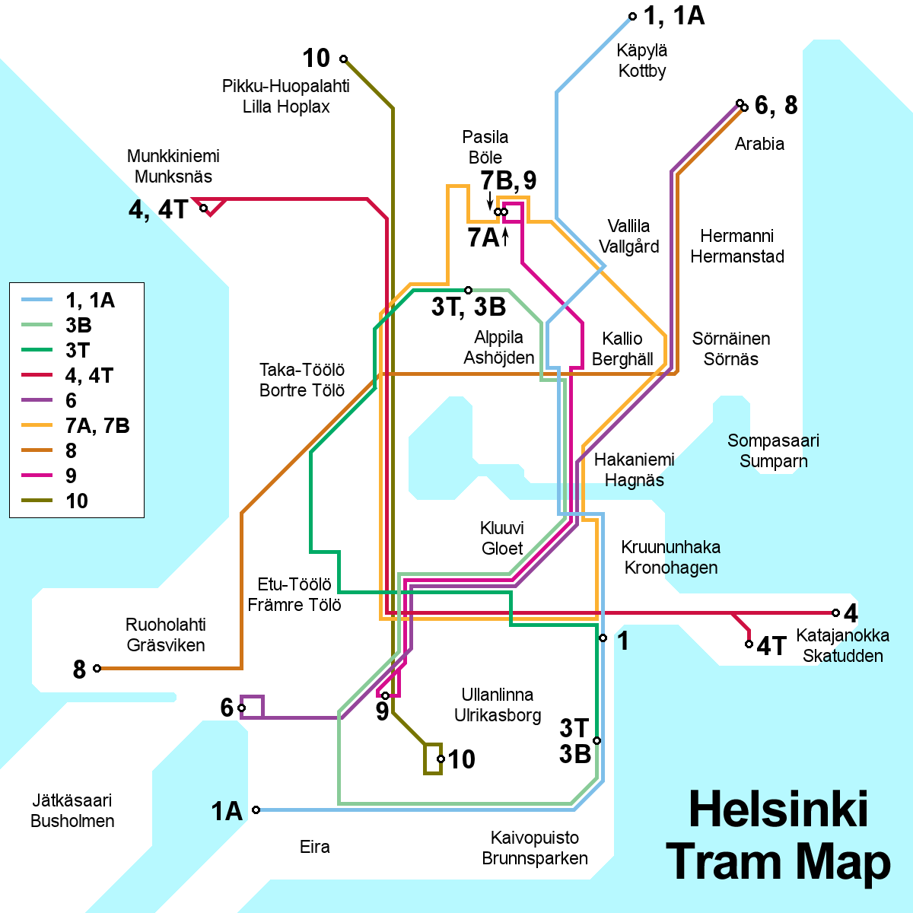

Dicas
Gastronomia

Em Helsinqui há muitos restaurantes excelentes, onde os sabores russos e escandinavos se misturam com os ingredientes locais, incluindo salmão, arenque báltico, rena e um tipo de framboesa do Ártico, as cloudberies. Alguns dos mais populares:
-Sea Horse
Um dos marcos da cidade é o Sea Horse, cujo cardápio finlandês atrai muita gente do lugar.
-Lappi
Para comida da Lapônia, o Lappi (www.lappires.com) oferece autêntica língua de rena ou pato em um ambiente kitsch.
-Havis e Mecca
O Havis é um transado restaurante de frutos de mar no porto, enquanto que o Mecca tem comida internacional. Ambos estão entre as novas aquisições do cenário de restaurantes de Helsinki.
-Elite’s e Kosmos’s
O Elite’s tem excelentes frutos do mar e o Kosmos’s, clássicos pratos finlandeses. Ambos estão entre os favoritos da clientela boêmia.
-Boisterous Zetor
O Boisterous Zetor, que significa “trator”, tem porções fartas de pratos locais.
-Kappeli e Esplanad
Os filandeses estão entre os principais povos consumidores de café do mundo, e os cafés de Helsinque refletem essa obsessão. No Esplanadi, o terrace no Kappeli é muito procurado no verão e o Esplanad, ali por perto, tem sua própria padaria.
Hospedagem

Quem deseja visitar deve ficar sabendo de antemão: os preços na região Escandinávia costumam ser altos, até mesmo para o bolso dos europeus, então não se iluda de que há um hostel/hotel baratinho a cada esquina. Porém, para gastar o mínimo possível, há 4 opções muito boas:
-Omena Hotels
Rede de hotéis "baratos" na Finlândia e Suécia. Claro que o barato sempre depente da época, local, disponibilidade de quartos, etc. Possui um conceito de hotel diferente, porque é self-service, não possui staff e nem recepção. Você faz sua reserva online e recebe um código para entrar em seu quarto. Os quartos são de tamanho (e decoração) padrão e cabem 4 pessoas, portanto se você está sozinho acaba sendo meio caro, mas se for em grupo pode sair mais barato que albergue, por pessoa.
-Serviços online
São sites que fazem a intermediação entre o hotel e o hóspede. Para quem viaja sozinho, uma boa escolha é o Hostel World. Para quem viaja sozinho ou acompanhado, o Booking.com é uma ótima escolha também.
-AirBNB
Serviço que intermedia locatário e hóspede. O serviço está presente em diversos países, inclusive no Brasil. Possui um imenso catálogo de casas, apartamentos, etc., em todas as faixas de preço.
-Wikitravel
O Wikitravel é a Wikipedia dos guias de turismo, e tem boas dicas de lugares para ficar. Antes de escolher um hotel, sugerimos ler a página sobre a cidade de destino para ter uma ideia dos bairros, lugares para comer e valores. As páginas em inglês costumam ser bem mais completas.
Transporte

Helsinque possui diversas formas de transporte disponíveis. Entre elas, estão:
-Transporte público (passes)
Passe para metrô: custa €2,50 em máquinas de tickets. Válidos por uma hora, no metrô apenas.
Passe HKL: custa €2,70 no aplicativo mobile ou em máquinas de tickets e €3,20 pagando diretamente para o motorista. Válido nos veículos da HKL, que são ônibus e bondes, por uma hora, dentro dos limites da cidade apenas.
Passe regional: custa €5,50. Válido por 80 minutos entre as cidades de Helsinki, Espoo, Vantaa e Kauniainen.
Passe regional plus: custa €8,00. Toda a região do passe regional mais as cidades de Kerava, Sipoo e Kirkkonummi.
Passe diário: custa €8,00 em máquinas de tickets, R-kiosks, escritórios da HSL e do motorista. Válido nos veículos da HKL, por 24 horas. Cada dia adicional custa €4,00.
-Taxi
O valor inicial é de €5.90 durante a semana, passando para €9.00 depois das 20h00 do sábado e durante todo o domingo. O trajeto custa €1.52/km.
-Carro alugado
Não é uma boa escolha, para Helsinque, devido a falta de lugares para estacionar e o alto valor dos estacionamentos.